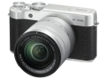

器材库 > APS及其以下画幅可换镜头数码相机 > X-A10

规格总览
产品类型
APS画幅可换镜头数码相机
发布日期
2016-12-01
影像规格
影像传感器
CMOS
影像传感器尺寸
23.6×15.7mm
有效像素
1630万
静态图像格式
JPEG, RAW, RAW+JPEG
静态图像尺寸
L: (3:2) 4896ｘ3264 / (16:9) 4896ｘ2760 / (1:1) 3264×3264 M: (3:2) 3456ｘ2304 / (16:9) 3456ｘ1944 / (1:1) 2304×2304 S: (3:2) 2496ｘ1664 / (16:9) 2496ｘ1408 / (1:1) 1664×1664
短片格式
MOV
短片尺寸
Full HD 1920 x 1080 30p / 25p / 24p，连续拍摄：最多14分钟
音频格式
线性PCM立体声
防抖系统
OIS型号镜头支持
除尘系统
传感器清洁系统：超声波振动
镜头和对焦
镜头卡口
Fujifilm X
对焦系统类型
TTL对比检测自动对焦系统
对焦模式
手动对焦/多重AF/区域AF/连续AF/追踪AF
AF辅助灯/光
有
曝光控制
测光系统
TTL256区测光
测光模式
点测光, 平均测光, 多重测光
曝光模式
P（程序AE）/A（光圈优先）/S（快门速度优先）/M（手动曝光）
胶片模拟模式
6种（PROVIA/标准、Velvia/高饱和度、ASTIA/柔和、经典正片、黑白、SEPIA）
创意滤镜
玩具相机、微缩景观、流行色彩、高调、低调、动态色调、鱼眼、柔焦、闪耀、局部色彩（红色/橙色/黄色/绿色/蓝色/紫色）
快门类型
焦平面快门
快门速度
机械快门： 4-1/4000秒（P模式），30-1/4000秒（所有模式）， B门最高60分钟，T门：30-1/32000秒 电子快门： 1-1/32000秒， B门固定1秒，T门：1-1/32000秒 机械+电子快门： 4-1/32000秒（P模式），30-1/32000秒（所有模式）， B门最高60分钟，T门：30-1/32000秒
闪光同步速度
1/180秒或更慢
曝光补偿
±3EV以1/3EV级调整
自动包围曝光
±1/3EV、±2/3EV、±1EV
ISO感光度
标准输出感光度：自动1/自动2/自动3（最高ISO6400）/ISO200至6400（步长为1/3） 扩展输出感光度：ISO100 / 12800 / 25600
白平衡
自动场景识别/自定义/色温选择(2500K-10000K)/预设：晴天、阴天、荧光灯（日光）、荧光灯（暖白）、荧光灯（冷白）、白炽灯、潜水
自拍
2秒/10秒/笑脸/双人（LV.1 - LV.3）/集体（1-4个拍摄对象）
连拍
约6.0帧/秒（JPEG：最多约20幅）约3.0帧/秒（JPEG：最大为存储卡容量）
闪光灯
内置闪光灯
弹出式
闪光指数
约5 (ISO100・m)/约7 (ISO200・m)
取景器/显示屏
LCD类型
彩色TFT LCD
LCD尺寸
3.0英寸
LCD像素
约104万
视野率
100%
LCD特性
翻转屏
文件输入/输出
存储卡
SD/SDHC, SDXC
数据接口
USB2.0
视频/音频接口
D型HDMI接口
无线功能
Wi-Fi
电源
电池
NP-W126S锂离子电池
续航能力
可拍摄静态图像约410幅
机身规格
颜色
黑色
尺寸
116.9×67.4×40.4mm
重量
仅机身约282g / 包括电池和存储卡约331g
其它
配件端口
快门线
工作温度
0 - 40℃
工作湿度
10-80%
附件
锂离子电池NP-W126S， AC电源适配器AC-5VF， 插头适配器， USB电缆， 肩背带， 机身盖， 使用说明书
该产品暂无存档的网友点评
产品图 / 样片
X-A10